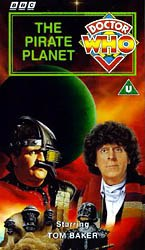
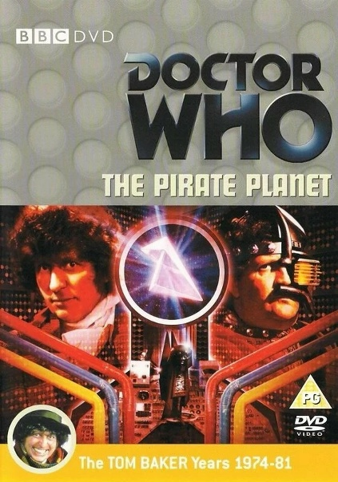
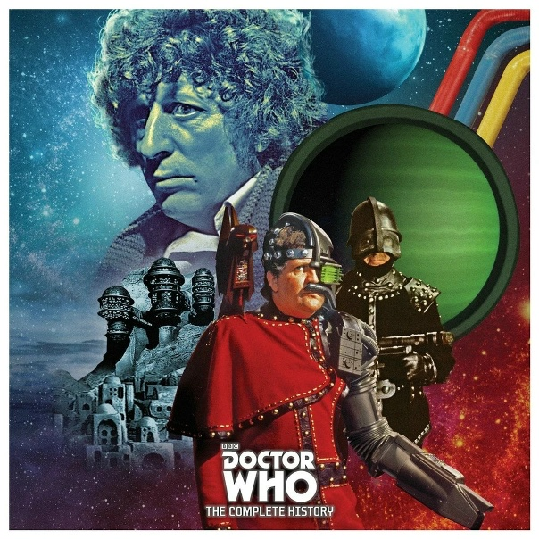

Эра Четвертого Доктора (16 сезон)
<<< НАЗАД ||| 2. Планета-пират ||| ДАЛЬШЕ >>>
Субтитры: Русские и Английские |  |
|---|---|
с фанатским обновлением визуальных эффектов (cunningmunki) Субтитры: Русские и Английские | |
The Pirate Planet
Дата выхода: 30 сентября - 21 октября 1978
Формат: 4 эпизода по 25 мин.
 |  |
Следующий фрагмент Ключа Времени ведёт Доктора и Роману на планету Калюфракс — холодный безжизненный камень. Но вместо него они находят цветущий мир, улицы которого усыпаны драгоценностями, а население живёт под властью Капитана — кибернетического тирана с металлической рукой. Скоро выясняется, что эта планета вовсе не Калюфракс, а Занак — полый мир с двигателями, способный телепортироваться и поглощать другие планеты ради их богатств. Первый сценарий Дугласа Адамса для «Доктора Кто» — остросоциальная сатира на ресурсный грабёж, приправленная фирменным абсурдным юмором и неожиданными поворотами.
 VHS - апрель 1995 |   DVD+Boxset - 24 сентября 2007 * Версия в нашей группе |
|---|



Трейлер: